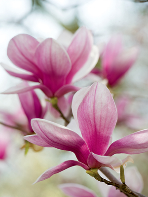

Magnolia is a large genus of about 210 flowering plant species in the subfamily Magnolioideae of the family Magnoliaceae. It is named after French botanist Pierre Magnol. Magnolia is an ancient genus. Appearing before bees did, it is theorized the flowers evolved to encourage pollination by beetles.
To avoid damage from pollinating beetles, the carpels of Magnolia flowers are extremely tough. Fossilised specimens of Magnolia acuminata have been found dating to 20 million years ago, and of plants identifiably belonging to the Magnoliaceae dating to 95 million years ago.